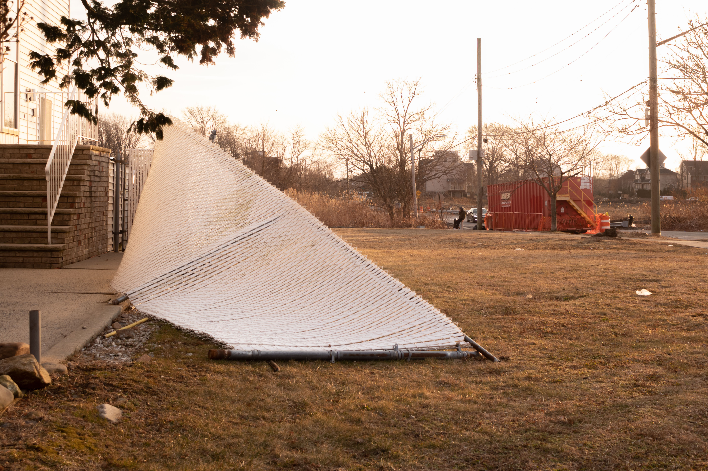
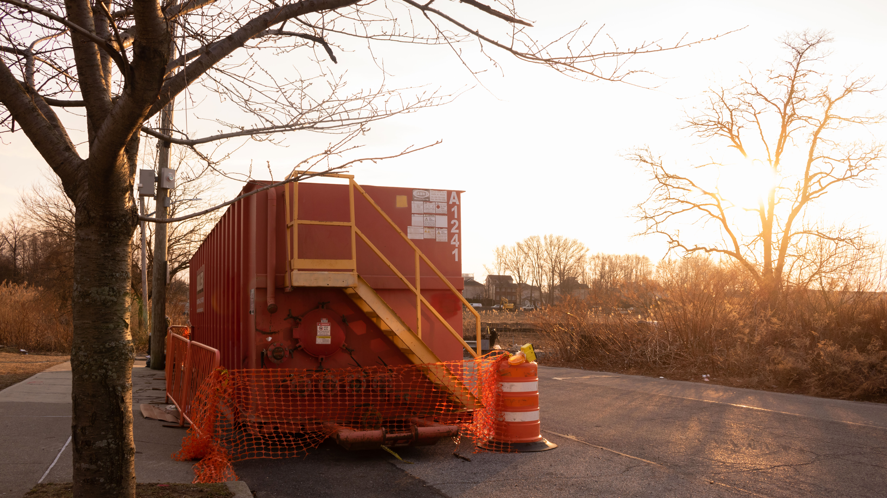
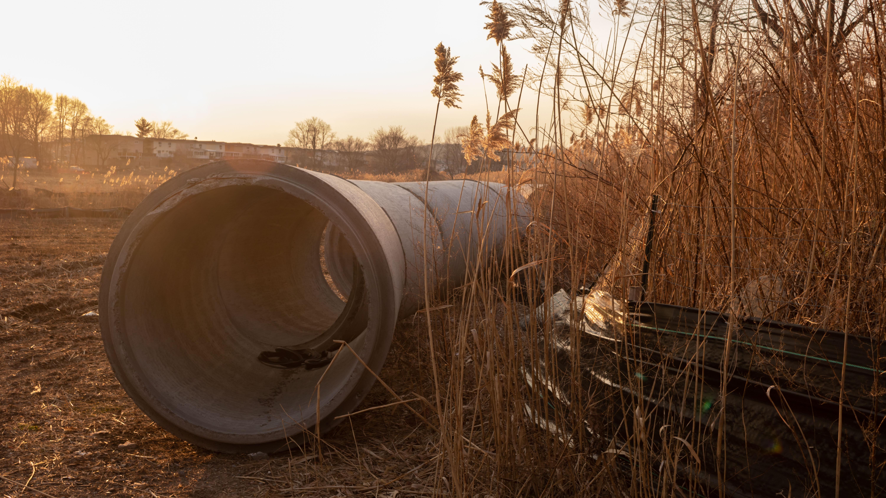
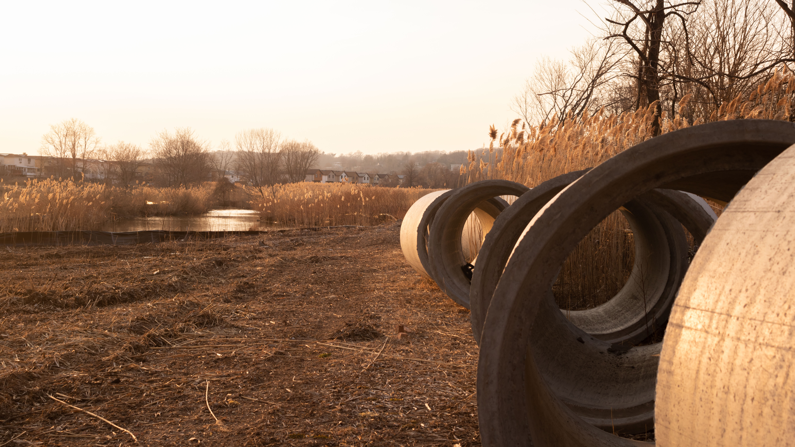
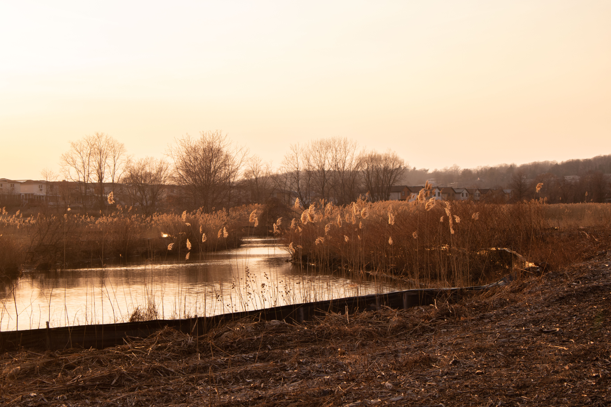
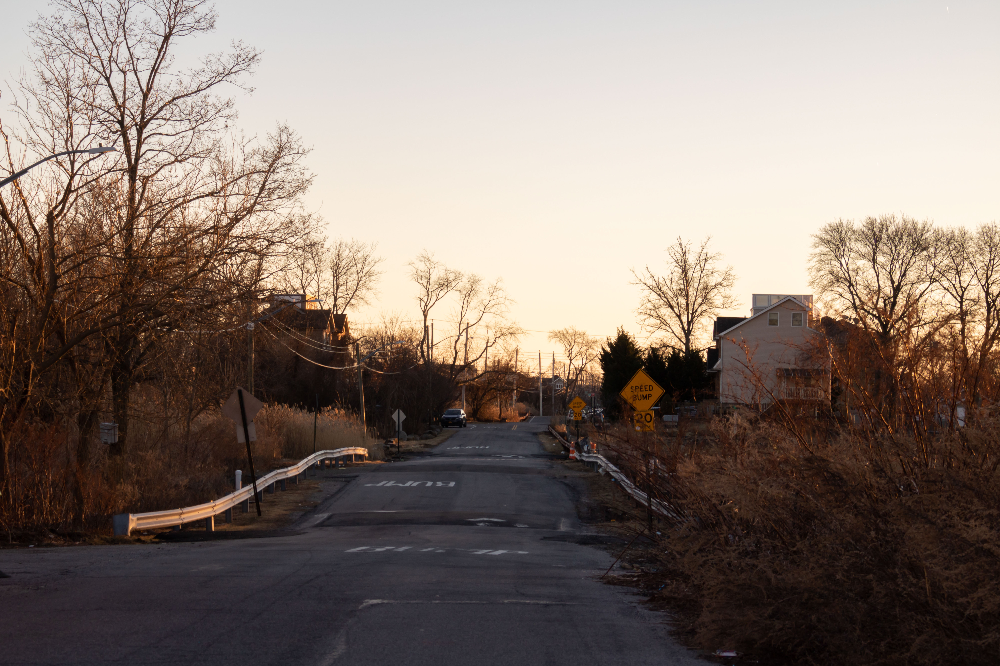
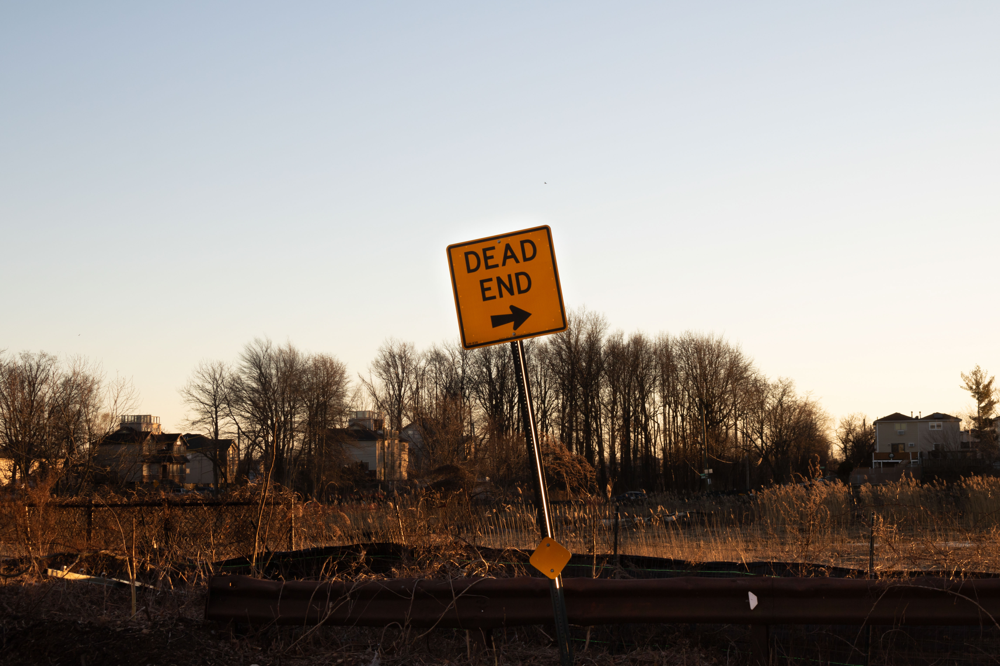
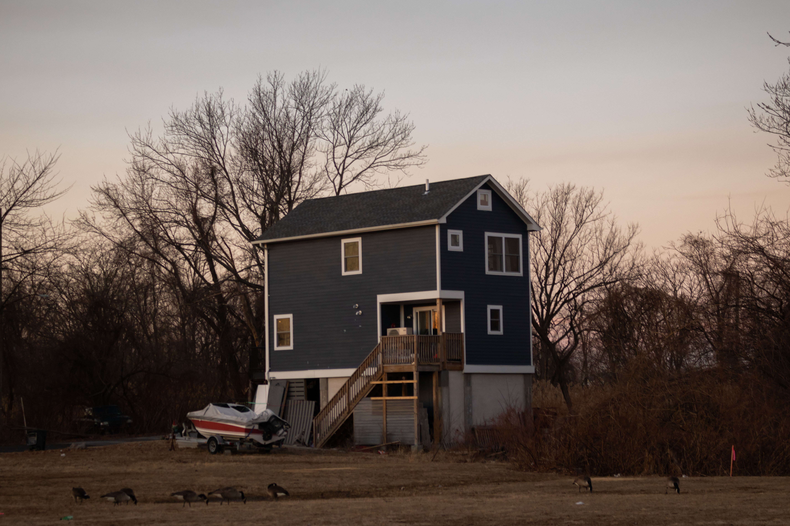

Looking towards Father Capodanno Blvd from Slater Blvd. Barren trees and pale plants reveal an unkempt road with a slanted road sign.


A fallen fence after a storm next to a construction container.


Construction material next to New Creek, presumably to be used to complete the construction of the Bluebelt Project.



The surrounding area of the creeks used to be lined with houses.


During this quiet afternoon, I managed to spot only one person on this road.



Dead end sign points to the horizon.


The areas surrounding the creek are tranquil and overtaken by nature. These views are hard to come by in New York City.


One of the only remaining homes along this road after Hurricane Sandy. The owner has raised the house to prepare for future flooding. To his dismay, his property has also been populated by geese.

